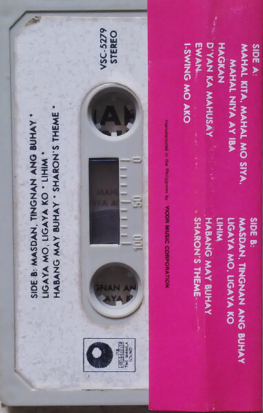

The Philippine Cassette Archive is a digital collection of cassette tapes, a glimpse into Pinoy tape culture. philippinecassettearchive.com
Launched in August 2022 under the philippine.design project, the collection currently focuses on graphic design, packaging, and visuals. Materials on launch are largely taken from Discogs. We later hope to expand on collecting cassettes from small labels, locally-produced bootlegs, and in collecting newer (post-2010s) artifacts by contemporary Filipino musicians & artist collectives.
If you have scans and/or digital versions of your cassette tapes or have metadata to contribute to any entries, please feel free to submit them to us at admin@philippine.design or via Facebook Messenger or Instagram DM.
If you are interested in donating to the archive or to philippine.design in general (feel free to specify where your donation would like to go), contact Chia at admin@philippine.design. We are grateful to receive donations in any amount to fund our research and archival requests, particularly in compensation for scanning & digitization efforts.
Cassette Adoption: For Php1000 (20USD), you may 'adopt' a cassette page and list your name + a short message on its respective page.
All contributors, supporters, and partners will be listed on this page.